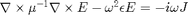

maxwell_matrices
Create the relevant matrices used in the FDFD method, which Maxwell implements.
Contents
Description
Converts from physics-based concepts (E-fields, permittivities, current densities) to linear algebra concepts (matrices and vectors).
To be specific, the electromagnetic wave equation that Maxwell solves is

which we translate term-for-term into linear algebra parlance as

function [A1, A2, m, e, b] = maxwell_matrices(s_prim, s_dual, mu, epsilon, J)
Input parameters
Get the shape.
dims = size(epsilon{1});
N = prod(dims);
my_diag = @(z) spdiags(z(:), 0, numel(z), numel(z));
my_blkdiag = @(z) blkdiag(my_diag(z{1}), my_diag(z{2}), my_diag(z{3}));
Get the relevant derivative matrices.
[spx, spy, spz] = ndgrid(s_prim{1}, s_prim{2}, s_prim{3});
[sdx, sdy, sdz] = ndgrid(s_dual{1}, s_dual{2}, s_dual{3});
Dx = deriv('x', dims); % Derivative in x, y, and z directions.
Dy = deriv('y', dims);
Dz = deriv('z', dims);
Z = sparse(N, N);
% Forward differences (used to compute H from E).
Dfx = my_diag(sdx.^-1) * Dx;
Dfy = my_diag(sdy.^-1) * Dy;
Dfz = my_diag(sdz.^-1) * Dz;
% Backward differences (used to compute E from H).
Dbx = -my_diag(spx.^-1) * Dx';
Dby = -my_diag(spy.^-1) * Dy';
Dbz = -my_diag(spz.^-1) * Dz';
Form matrices
A1 = [ Z, -Dbz, Dby; ... Dbz, Z, -Dbx; ... -Dby, Dbx, Z]; A2 = [ Z, -Dfz, Dfy; ... Dfz, Z, -Dfx; ... -Dfy, Dfx, Z]; m = [mu{1}(:) ; mu{2}(:) ; mu{3}(:)]; e = [epsilon{1}(:) ; epsilon{2}(:) ; epsilon{3}(:)]; b = -i * omega * [J{1}(:) ; J{2}(:) ; J{3}(:)];
Derivative for three dimensional space.
Note that we are making the forward derivative only. Also, we assume periodic boundary conditions.
function [D] = deriv(dir, shape) shift = (dir == 'xyz'); % Direction of shift. % Get the displaced spatial markers. my_disp = @(n, shift) mod([1:n] + shift - 1, n) + 1; [i, j, k] = ndgrid(my_disp(shape(1), shift(1)), ... my_disp(shape(2), shift(2)), ... my_disp(shape(3), shift(3))); % Translate spatial indices into matrix indices. N = prod(shape); i_ind = 1 : N; j_ind = i + (j-1) * shape(1) + (k-1) * shape(1) * shape(2); % Create the sparse matrix. D = sparse([i_ind(:); i_ind(:)], [i_ind(:), j_ind(:)], ... [-ones(N,1); ones(N,1)], N, N);